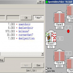

To avoid problems with fast folds in early position the dealposition-symbols will consider the following players as dealt
| Symbol | Meaning |
| betround | betting round (1-4) 1=preflop, 2=flop, 3=turn, 4=river |
| currentround | synonym for betround |
| previousround | the previous betting round (1-3, 1 if the current round is preflop) |
| preflop | verbose constant for the 1st betting round |
| flop | verbose constant for the 2nd betting round |
| turn | verbose constant for the 3rd betting round |
| ruver | verbose constant for the 4th betting round |
| betposition | your bet position (1=left to the dealer=usually sblind, 2=bblind, ..., nplayersdealt=dealer); contrary to dealposition betposition will change as players fold in front of you. |
| dealposition | your deal position 1 = left to the dealer, usually small blind2 = 2 left to the dealer, usually big blind ... nplayersdealt = dealer. dealposition will not change as players fold. Dealposition does not magically auto-adapt for special cases like a missing small-blind. If you want to figure out chairs better use the more modern chair symbols. |
| callposition | your numbered offset from the raising player (who is 0) |
| dealpositionrais | the deal position of the raising player (1-10) |
| betpositionrais | the bet position of the raising player (1-10) |
